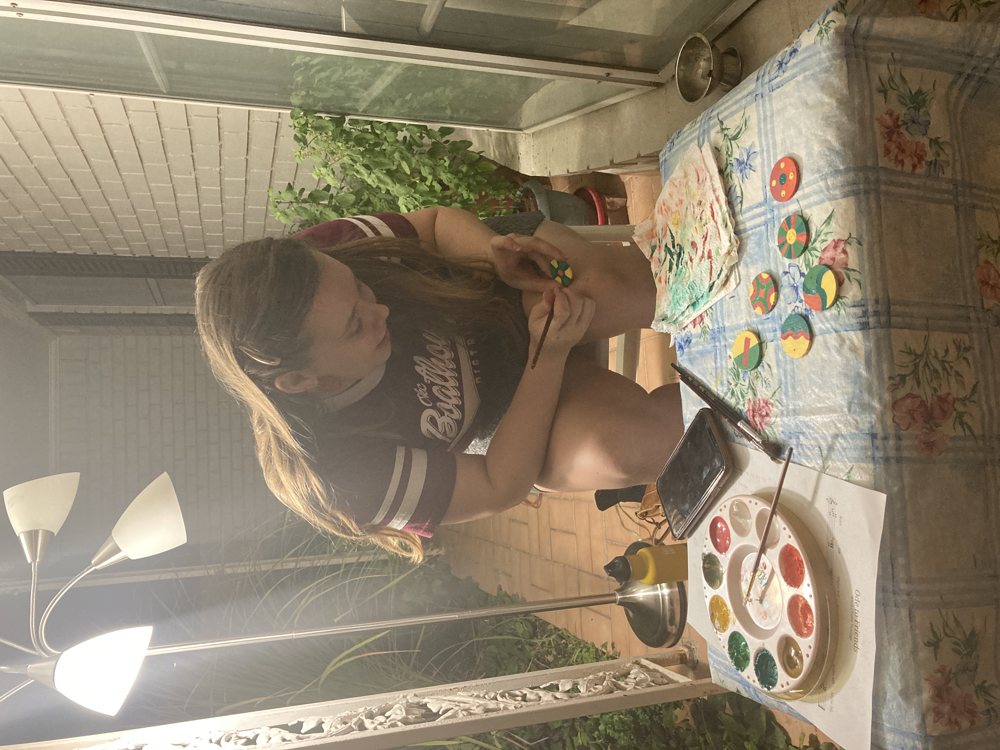

"There is nothing better than being someone's friend." The theme of friendship has defined the past few months, and my friends constantly fill me with wonder. Their diversity of interests reminds me of the vastness of human thought; their various ways of expressing love reminds me of the depth of the human spirit. Just as musical intervals carry unique energies, these friends each contribute a special, distinctive feeling. The acoustic guitar music that follows is inspired by this analogy. Each track starts with the sound of the interval.
—Chirag
June 14th, 2020
The songs I recorded in June capture the spirit of my friends, but when I returned home for a few weeks in October, I longed for a more permanent and physical way to celebrate these people. I sat at the piano and began playing with the seven intervals I had explored over the summer, with a more sonic, "wall-of-sound" approach than my previous songwriting approach. I eventually arrived at these chords and constructed seven solid-bar wind chimes tuned accordingly. My incredibly talented friend Solvay Linde painted beautiful wind-catchers for each of the chimes. The patterns are inspired by the musical intervals and can be seen below. We recorded the wind chimes at Audio Dallas; those recordings can now be heard below my original acoustic guitar recordings. The chimes will eventually be gifted to my friends, but for now, if you sit on my parents' front porch, a gentle fall breeze may pass, and you feel the spirit of those you love nearby.
—Chirag
October 25th, 2020
Root/octave
1:1
Qualitatively: "The core of one's being," hunger, honesty, equality, self-discovery, realization.
2nd/9th
9:8
Qualitatively: Wonder, curiosity, awe, freedom, bliss.
Major 3rd/10th
81:64
Qualitatively: Positivity, reflection, motion, home, joy.
4th
2:3
Qualitatively: Stability, humility, Nature, simplicity, peace, listening, meditation.
#11
729:512
Qualitatively: Energy, creativity, all-encompassing, symmetry, inspiration, playfulness.
Major 6th
27:16
Qualitatively: Compassion, thoughtfulness, longing, emotion, care, love.
Major 7th
243:128
Qualitatively: Elegance, grace, solitude, rain.
Cutting and tuning the wind chimes in my little workshop (my parents' Dallas garage).
Solvay at work, painting beautiful patterns on the wind-catchers.